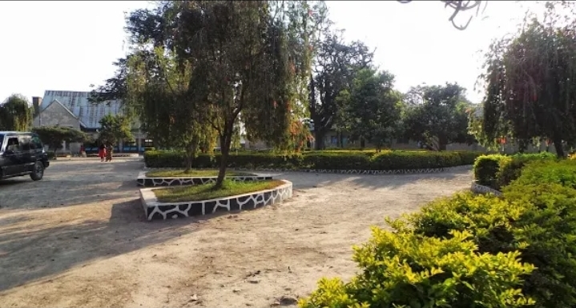
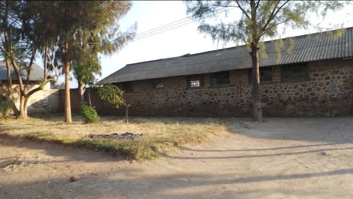
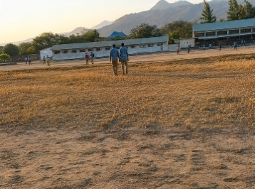
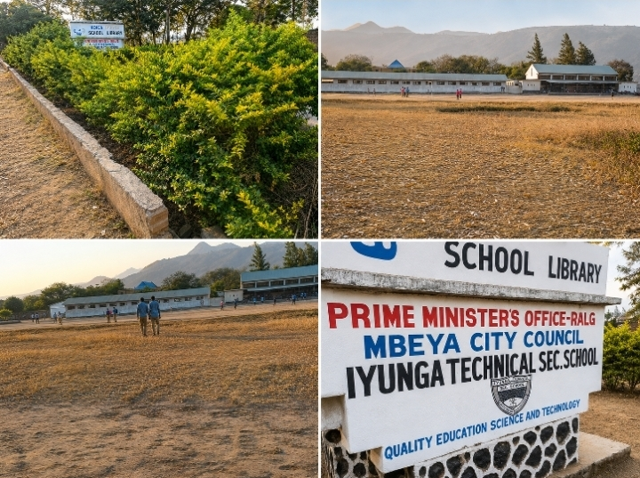

School Main Garden
Beautiful green garden area and trees within the school compound.

Technical Workshops & Classrooms
Historic stone-structure workshop blocks used for technical practicals.

School Buildings & Parade Grounds
Overview of campus classrooms, technical workshops, and open grounds.

Student Campus Life
Students walking across the school campus during daily activities.

School Main Signboard
Prime Minister's Office-RALG, Mbeya City Council - Iyunga Tech Sec School.

KOICA Library Garden Path
Green garden pathway leading to the modern school library facility.

School Campus Overview
A combined perspective of gardens, grounds, and school landmarks.